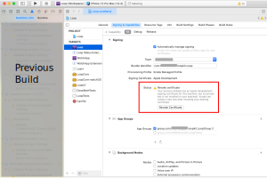

Updating/Rebuilding
Updating Loop¶
This page is only relevant when building with a Mac and Xcode.
For GitHub (Browser Build) updates, please see: GitHub Update
Time Estimate
- 25 minutes, if Xcode and macOS are already updated to support the current or desired iOS
- up to 2 days, if need to install macOS and / or Xcode update(s)
Summary
Summary of tasks to prepare for and update your app:
- Determine required macOS and Xcode version based on your phone iOS
- If necessary, update first macOS and then Xcode
- Check your Developer Account
- Download Updated Loop code and Build Loop
In each of the sections below, follow links to sections of other build pages then hit the back button on your browser to return to this page.
FAQs
- "What is an update?" Anytime you want to change versions or if the app is about to expire, follow the instructions on this page.
- "Do I delete my old Loop app first?" Definitely not! If you keep your Loop app on your phone, your Loop settings (and existing pod) will continue to work the same after the update. Seamless.
- "Do I need to start a new pod when I update?" No. Your existing pod session will continue seamlessly if you are using the same Developer Account to sign the Loop app targets as you did the last time you built.
- "What if I'm using a new/different developer account?" If you aren't building with the same developer account used when your existing app was built (this includes going from free to paid), then you will be installing a brand new (second) Loop app on your phone. Your existing pod won't work with the new app, so you might want to time this transition when you are due to change pods. Delete the old app once you get the new one all set up.
- "What if it is a new computer but the same developer account?" No big deal...use the Updating Steps to check that your new computer has the required compatible versions and then build your app. This will include installing Xcode, configuring Xcode preferences, and adding your Developer ID to Xcode: refer to What about a New Computer?. There is no need to delete provisioning profiles on a brand new computer, but no harm comes from following the instruction.
When to Update Loop¶
Under ordinary circumstances, you do not have to update your Loop app until it expires (1 year for a paid account). However, we encourage regular updates when a new version of iOS, or of Loop, is released because they often contain bug fixes or improvements which may increase operational stability.
iOS Updates¶
Under ordinary circumstance, updating the iOS on your phone does not require a rebuild of the app on your phone. However, it's important to be prepared in case of an emergency, such as a lost phone.
Best Practice
It is good practice to first check if your computer (macOS or Xcode) will require an update to support building Loop to your phone BEFORE applying an iOS update to your Looping phone.
Follow these "safe Looping" steps for updating your iOS:
- Check which version of macOS and Xcode is required for the phone iOS you intend to install.
- Update macOS / Xcode if needed
- Check Loop: Current Release status - if there is new code, you should download it
- Build app to your iPhone
- Then update your iPhone iOS
Loop Releases provides information about current and previous Loop versions.
Updating to iOS 16 (watchOS 9) requires enabling Developer Mode. Your existing app will not open until you take this step. Once enabled, the app opens again. A rebuild is not required.
"Loop" is No Longer Available¶
The apps built and signed by you in Xcode with a paid developer account will last for 12 months; then they expire and must be rebuilt. At least once per year you will have to rebuild your app and go through this update process. If you do not update and the "provisioning profile" on your phone expires, you will see the "Loop" is No Longer Available message. You will be given multiple Loop App Expiration Notifications on the Loop phone, but might miss them if you are a caregiver.
When you see "Loop" is No Longer Available on your phone, the only solution is to rebuild the app. All of your settings are still present on your phone, but your "provisioning profile" expired and you need to generate a new one. Once you build Loop on your phone, following the instructions on this page, all your settings will be maintained - assuming you build with the same Apple Developers ID that was used initially.
macOS and Xcode Versions¶
Determine Required Xcode and macOS Versions¶
Between Loop app builds, there's a high likelihood that Apple has updated one or more of the systems involved in your Loop app. If you don't have the minimum Xcode version required for your phone iOS, you cannot build on that phone. Sometimes you must also update the macOS version to allow you to use the required Xcode version.
Based on the iOS on your phone, or the iOS you plan to install on your phone, determine the required macOS and Xcode versions. Click on this link versions for iOS, macOS and Xcode to determine the versions needed and then hit the back button in your browser to finish the steps on this updating page.
If you are tired of the macOS and Xcode version update requirements, check out the Browser Build option.
First macOS and Then Xcode
Your macOS must meet the minimum requirement for the Xcode version you need to support your current iOS as detailed in that link above.
- If the macOS is too old, the Xcode version will not appear in the App Store
- You might think you don't need to update Xcode (but you do)
- Your build will fail and mentors might need to help you
Don't be that person. Follow the directions.
Minimum means you need to have at least that version - newer versions build just fine.
Verify / Update macOS¶
- Click on this link Check your macOS Version and follow the instructions on that page if an update is required.
- After you've reviewed that section, hit the back button on your browser to return here
Verify / Update Xcode¶
Click on this link Check your Xcode Version to find your Xcode version number.
If you need to update your Xcode, follow the instructions at this link Install Xcode and continue through Xcode Preferences.
Advanced users: If you are finding installation of Xcode from the App Store incredibly slow, try the alternate method of Direct Download of Xcode.
Direct Download
- If you previously did a direct download of Xcode, it might not show up in the App Store.
- Either do another direct download or follow these directions in the Direct Download section to reconfigure so it will show up in the App Store.
What about a New Computer?¶
Make sure your new computer has the macOS and Xcode required by your phone iOS. Be sure Xcode Command Line Tools are installed and that you Add Apple ID to Xcode.
Missing Xcode or Command Line Tools¶
WARNING
If you fail to have Xcode or Xcode Command Line Tools installed, you will get one of these errors (or something similar) when you attempt to run the Build Select Script:
- xcrun: error: invalid active developer path (/Library/Developer/CommandLineTools), missing xcrun at: /Library/Developer/CommandLineTools/usr/bin/xcrun
- xcrun: error: active developer path ("/Applications/Xcode.app/Contents/Developer") does not exist
- xcode-select: Failed to locate 'git', requesting installation of command line developer tools
- xcode-select: error: tool 'xed' requires Xcode
- Scripting Bridge could not launch application . . .
Follow Xcode Preferences page after updating Xcode
Make sure to restart your computer after updating Xcode and follow the instructions on the Xcode Preferences page. There's a known issue that happens often enough to be frustrating if you skip those steps. It's not always required...but this is a good easy ounce of prevention step.
Check your Developer Account¶
Apple updates its License Agreement for the Developer Program frequently. You need to login to your developer account to manually check if there is a new agreeement to accept. If you see a big red or orange banner across the top of your Developer Account announcing a new license agreement like shown below...please read and accept it before building Loop.

Ready to Build Loop¶
As long as there are no errors, you are now ready to proceed to Build the Loop App: Developer Mode
After building the new app, you may choose to return to this page and follow the instructions to Delete Old Copies. This is optional, but cleans up space on your computer.
Delete Old Copies¶
This step is optional, but if your computer is low on space, it helps to clean up old downloads your are no longer using.
When you update, you no longer need to keep old copies of the code on your computer. If you want to clean up space, you can delete those old folder(s) now if you want.
Where is the old folder?
Assuming you used the Build Select Script, your downloads are in the ~/Downloads/BuildLoop folder as shown in the graphic below. If you are tight on space, the older folders can be deleted. Best practice, download fresh and build Loop; and then go back and delete all but the most recent copy. The nice thing about the Build Select script is it automatically generates the folder name with the date and time of the download. Delete each unwanted folder, one at a time.
If you see a file (not a folder) in ~/Downloads/BuildLoop called LoopConfigOverride.xcconfig, keep that around. If you delete it, you'll need to recover it from the trash, regenerate it (if you know how) or sign your targets manually for your current download.
The Scripts folder can also be left alone, but if you delete it, it is regenerated with the next use of the Build Select Script.

Background Information¶
New Loopers do not need to read the rest of this page.
Experienced Loopers may wonder what happened to deleting derived data.
- Each workspace folder has a unique folder for storing derived data
- Deleting derived data across all Xcode workspaces and projects for a brand new download is not required to ensure a year for a given build
- The Clean Derived Data option in the Utilities menu can be required for some special cases, but you probably won't need it
Frequent Builder¶
If you build frequently, you do not have to delete the profiles every time. One user reported deleting profiles gave a Revoke Certificate message - follow the link to see other reasons why that might happen. When the build script asks if you want to "Ensure a Year?", you can skip that step.
Revoke Certificate Issue¶
What does it look like if you run into the Revoke Certificate message? When you prepare to Sign the Targets with Xcode, you'll see the message highlighted in the figure below.

More information is shown in the orange box below.
Revoke certificate
The important part of this message is:
- ". . . signing certificate . . . private key is not installed in your keychain . . ."
WAIT - You might not need to revoke your certificate
- You might get this if you logged in as a different user, have a new computer or if your computer had to undergo a factory reset
- You can transfer your keychain to your new computer (or just revoke and keep going)
- To transfer your keychain, check this Apple Documentation Link
- Your version of Xcode is way out-of-date
- Mentors have seen this with people trying to build with Xcode 11.4 or earlier
- Update Xcode to the most recent version
If you revoke and keep going:
- If you do hit Revoke Certificate, you'll be given a new one
- Even with the new certificate, your Apple Developer ID is not affected
- You can re-build on the existing Loop app on your device(s) and maintain all your settings with the new certificate.
Be aware that you will have to rebuild to every device that used the certificate you just revoked and if you have other apps built with this certificate, they will stop working too.
Direct Download of Xcode¶
Many people find updating Xcode from the App Store to be incredibly slow - especially when a new version has just been released. This method still takes time and enough space on your disk, but is faster than going through the App Store. Depending on your internet speed, this download can be done in about an hour. Then once it is downloaded, expect another fifteen minutes to several hours (depending on the speed of your computer) for the "xip" file to "expand".
The instructions do not hold your hand.
- Your macOS must be at the minimum verion (or newer) to support the version of Xcode you're about the download
- You need to know how to log into your Apple Developer account and navigate those menus
- You need to know how to use Finder to navigate to Downloads
- You need to know how to drag the Xcode icon into your Applications folder (after download and expand completes)
- After you have done a direct download, the App Store will not show you updates
- Either repeat the Direct Download or
- Delete Xcode from Applications folder
- Open the App Store and search for Xcode
- Install fresh
- After you use the App Store for a download, then Updates will show in the future
Here are the different steps you need to follow doing the Direct Download instead of the App Store method:
- Login to your Apple developer account
- Examine the menus (on my computer there are buttons on the left hand side)
- Click on Downloads (under Additional Resources)
- Look at menu items (on my computer there are buttons at the top) that say Beta, Release, Profiles and Logs, and More
- Click on More
- Scroll down until you find the item you want (for example, Xcode 13)
- Click on View Details and click on the Download button for the "xip" file
- Wait for Download to complete
- Expand the file by clicking on it in Finder
- Move the Xcode icon to Applications after the expansion completes
- Check the Command Line Tools setting under Xcode->Preferences
- The selection cannot be blank or Build-Script will fail to open Xcode automatically
- It should be the same version as your Xcode
- Reboot the computer